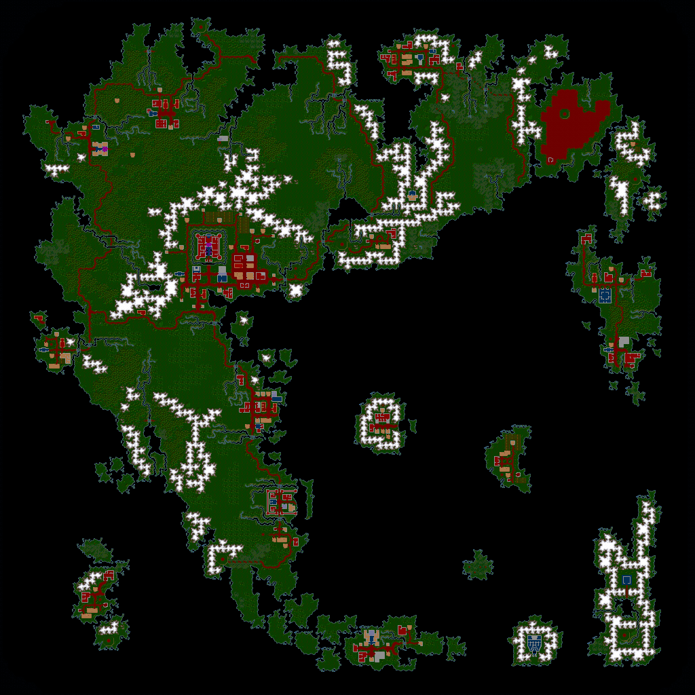

Assembling Britannia
A 1024×1024 world squeezed into 32 KB, and an ordering mistake that looks perfectly plausible until you render it.
The surface of the game world is a million tiles. The file that describes it is 32,256 bytes. The trick is that almost nothing is stored directly.
CHUNKS is a library of 1024 reusable 8×8 tile patches, 64 bytes each,
filling exactly 64 KB. MAP then describes the world purely as references into
that library. A forest is one chunk pointed at a few hundred times.
The references are packed twelve bits each, two per three bytes. That gives room for 4096 chunks where only 1024 exist, and the top two bits are never used. The arithmetic works out exactly:
surface 128 × 128 refs × 1.5 bytes = 24,576
dungeons 5 levels × 32 × 32 × 1.5 = 7,680
-------
32,256
One other thing falls out immediately. Every byte in CHUNKS is a tile number,
and the maximum value is 255, which means terrain only ever uses the first 256 tiles.
Everything else in the world, every tree and door and barrel, is placed separately as an
object. The map is just ground, water and walls.
The ordering trap
Here is the part that would have quietly ruined everything. The obvious reading is that the 128×128 chunk references run in plain row-major order: left to right, top to bottom. That reading consumes exactly the right number of bytes and raises no errors anywhere.
It is also wrong. The surface is divided into an 8×8 grid of super chunks, each 16×16 chunks, and the references are stored one complete super chunk at a time.
I rendered both. One produced a coherent continent; the other produced a scrambled mess of 128-tile squares. That settled it in about four seconds of looking.
The super chunk structure got independent confirmation from somewhere else entirely. The
object data is split across 69 separate files named OBJBLKAA through
OBJBLKHI. Eight by eight is 64 surface files, plus five more for the dungeon
levels. 64 + 5 = 69. The same division shows up in two unrelated places in the data, which
is about as good as structural evidence gets.
What it looks like

That overview is not decoration. It is the project's cheapest regression test: a checksum tells you the bytes changed, but only a picture tells you the continent is still the right shape. It is generated on every export, alongside one image per dungeon level.
The checksum exists too, of course:
surface terrain, 1024 × 1024 bytes
SHA-256 f026f8223d1c00d513a7fefd47e1bbb557e88f953b80f7d5fe977baacafa31efOne small decision
The plan called for exporting the world as 16-bit tile numbers. Since terrain demonstrably only uses values 0–255, I wrote bytes instead. Widening the field would have been speculation about a future need, and it would have doubled the size for nothing. The whole world, all six levels, compresses to about 200 KB.
Sixteen thousand objects and one suspicious bit: separating things on the ground from things inside a chest, by elimination.